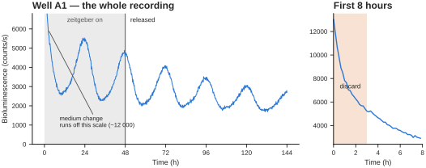
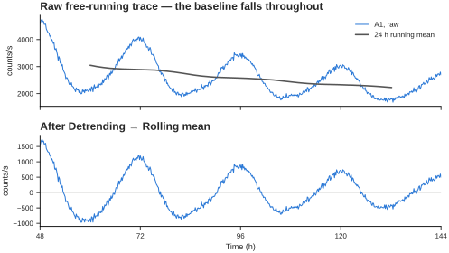
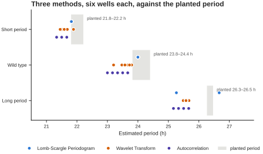
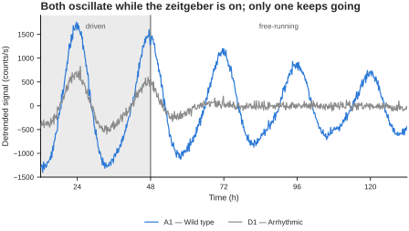
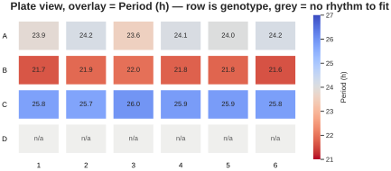
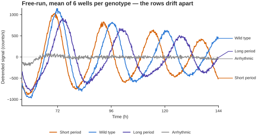

Tutorial 2 · A long time series¶
A bioluminescence recording: a PER2::LUC reporter in a 24-well plate, read every 10 minutes for six days. Two days under a 12:12 temperature cycle, then release into constant conditions for four days.
Where Tutorial 1 was about not asking for a period, this one is about getting a good one — and about the three things standing between you and it: a medium-change artefact at the start, a baseline that decays all the way through, and an oscillation that damps as the cells desynchronise.
What is in the file¶
| Property | Value |
|---|---|
| Time | 0 to 144 h, every 10 min — 865 timepoints |
| Wells | 24, named A1–D6 |
| Units | photon counts per second |
| Zeitgeber | 12:12 cycle for the first 48 h, then constant |
One genotype per plate row:
| Row | Condition | Intrinsic period |
|---|---|---|
| A | Wild type | 24.2 h |
| B | Short period | 22.1 h |
| C | Long period | 26.4 h |
| D | Arrhythmic | none — damps out within a cycle of release |
Every well is slightly different, as they would be: periods are jittered by about 0.2 h, and each well has its own baseline, decay rate and damping rate. The answers file has the exact value for every one.
Step 1 — load it¶
Upload the data file and set Time column to Time.
This time the unit guess is right — the 10-minute interval is 0.167 in the file, below 1, so Chronotopia correctly assumes hours:
Experiment with 24 sample recorded for 144.0 hours (recorded every = 0.2 h)
You should also see, in the layout popover:
Detected a 24-well (4×6) plate from the sample names (24/24 wells identified).
That came from the well names alone. It unlocks the Plate view and the option to group wells by row or column.
Step 2 — group the wells, two ways¶
The quick way. In the layout popover, set Group wells by to Row. On
this plate, row is genotype, so you get four groups without uploading
anything.
The proper way. Upload the layout file. Same four groups, but now named — Wild type, Short period, Long period, Arrhythmic — which is what you want on a figure legend. An uploaded layout always wins over geometric grouping.
Use the layout file. The geometry shortcut is there for when your plate genuinely is organised by row and you are just looking.
Step 3 — trim the medium change¶

Left: the whole recording, shaded where the zeitgeber is on. Right: the first eight hours on their own scale — the trace starts near 12 000 counts and has fallen by more than half within an hour.
That opening spike is the medium change, not biology. Fresh medium, a temperature step, a mechanically disturbed monolayer — every luciferase recording starts with one, and it is always discarded. Left in, it dominates every detrending window it touches and pulls the first cycle out of shape.
Set Starting Timepoint to 3 hours. The transient is a sub-hour exponential, so 3 h clears it with room to spare while costing almost nothing.
Tip
Look at the first hour of every recording before you analyse it. This is a habit worth forming, not a quirk of this dataset.
Step 4 — tell the app about the entrainment¶
Open Entrainment parameters. There are three ways to describe the 12:12 cycle; all three give the same answer here.
Set Entrainment cycles to 2, T cycle to 24, day length 12. Fine
when you know the protocol.
Set Mode to upload and give it the entrainment file. It is two columns
— time, and a 0/1 zeitgeber state — and Chronotopia reads the last column
as the signal, counting rising edges.
This file starts in the cold half precisely so that both cycles produce a rising edge; a schedule that starts warm would be read as one cycle, not two. It resolves to 2 cycles of 24 h, putting the release at hour 48.
Only useful when you have recorded the zeitgeber as one of the columns in the data file itself.
Set Zeitgeber type to Cold - Warm, and the entrained portion is shaded on
every plot from here on.
Leave Exclude entrainment from period estimation switched on. This is the control that matters. During the first 48 h every well is being driven at 24 h by the cycle, so including that stretch pulls every period estimate towards 24 — erasing exactly the genotype differences you are trying to measure. With it on, period estimation runs on hours 48–144 only.
Step 5 — remove the baseline¶

The oscillation is obvious in the raw trace, but it rides on a baseline that falls from roughly 3 900 to 2 200 counts as the substrate is consumed. A 24 h running mean tracks that baseline; subtracting it leaves the rhythm centred on zero.
That drift is not a rhythm, but every frequency method treats it as very low-frequency power. Set Detrending to Rolling mean and leave Detrending window (h) where it lands — it defaults to the middle of your Period range, which is what a moving average needs in order to remove the baseline without eating into the rhythm.
Leave Baseline removal on Subtract for now. Switching it to Divide is the right call if you are going to report amplitude or damping from these traces, and Preprocessing explains why: the baseline here is a multiplying factor, so subtracting it leaves the rhythm looking like it damps about 1.5x faster than it does.
The gain on period is modest here — Lomb-Scargle's worst well moves from 1.20 h off the planted value to 1.15 h — because Lomb-Scargle is fairly robust to a smooth trend and the free-running window is short enough that the decay within it is nearly linear. It matters much more on the actogram and on the amplitude features, where an untreated baseline slide reads as damping that is not there.
Rolling Hilbert removes the damping too
Rolling Hilbert goes one step further and divides out the amplitude envelope. That is the right choice when you care about phase and want the damping gone entirely — and the wrong choice when damping is what you are measuring, since it removes exactly the thing you want.
Leave Normalization at None for period work. Switch it to Z-Score when you want to overlay wells with very different absolute signal on one axis.
Step 6 — estimate the period¶
Set Period range to something generous — 16 to 32 h — and work through the methods.

Each dot is one well. The grey band is the range of periods actually planted in that genotype's six wells. All three methods sit slightly low, and all three separate the genotypes far more cleanly than they pin an absolute value.
| Method | Short period | Wild type | Long period | median error |
|---|---|---|---|---|
| planted | 22.1 | 24.2 | 26.4 | — |
| Lomb-Scargle Periodogram | 21.8 | 24.0 | 25.5 | 0.35 h |
| Wavelet Transform | 21.6 | 23.5 | 25.6 | 0.67 h |
| Autocorrelation | 21.4 | 23.3 | 25.4 | 0.83 h |
Three things to read off that.
Every method gets the biology right. Short < wild type < long, every time, with the genotypes separated by about 2 h — several times the disagreement between methods.
No method is exact. The worst individual well is off by 0.9 to 1.2 h depending on the method, and the methods disagree with each other by up to 0.7 h on the same wells. Four cycles of a damping oscillation is not enough to do better.
So report the difference, not the absolute number. "The mutant runs 2.2 h shorter than wild type" is supported by this recording. "The mutant period is 21.8 h" is a number with about an hour of method-dependent slop that you have not quoted. If you do quote an absolute period, say which method produced it.
Lomb-Scargle's frequency grid is coarse at long periods
autopower() runs at astropy's default resolution, which over a 96 h window
puts consecutive candidate periods about 1.4 h apart near 26 h. Long periods
therefore come back quantised — you will see repeated identical values
across wells. That is a resolution limit of the grid, not agreement between
wells.
Period sweep is worth a look too. Instead of one number per well it scans a range and shows how sharply the fit peaks. A well with a broad, flat sweep is telling you its period is poorly determined, which no single number does.
Step 7 — find the arrhythmic wells¶
Row D has no self-sustained clock. During entrainment those wells still oscillate — they are being driven by the temperature cycle, and a driven response looks a lot like a rhythm.

A1 and D1 both oscillate while the zeitgeber is on. Within about a day of release, only one of them is still going.
This is why step 4 matters. Test for rhythmicity across the whole recording and row D will pass, on the strength of the driven cycles alone.
Set Rhythmicity Analysis Parameters → Minimum time to 48 so the test runs
on free-running data only. Now the four rows separate cleanly: over the last two
days, the rhythmic wells' fitted amplitude is 4.4 to 7.3 times their residual
scatter, and row D's is 0.08 to 0.28. Not marginal — absent.
Step 8 — the plate view¶

The overlay is a diverging scale centred on 24 h, so shorter and longer read as opposite directions from a neutral midpoint. The four genotype rows are visible at a glance, and row D — where the cosinor has no rhythm to fit — greys out.
Switch the plot to Plate view and set Overlay to Period (h). Try
Cosinor R² as well; row D drops out. Rhythmicity appears in the list once
you have run an analysis and gives the verdict per well.
This is the fastest QC you have on a plate experiment. An edge well that dried out, a well that never got cells, a row you pipetted wrong — all of them show up here in one glance and in no other view.
Step 9 — compare the conditions¶

Mean of six wells per genotype, detrended, after release. They start in phase — the zeitgeber held them there — and by day six the short-period row is roughly half a cycle ahead of the long-period one. That divergence is the period difference made visible, and it is more convincing than any table.
Compare conditions with all four groups, style Mean ± SD, with the plot starting after release. Underneath it is an expander listing every trace's estimated period using whichever method you selected — handy for spotting a single odd well.
Then Feature extraction → Compare conditions, which runs all ~100 features across the groups at once, grouped by concept. Compare Short period against Long period and the Period concept should dominate; compare either against Arrhythmic and Rhythm strength, Amplitude and Damping & drift take over.
Watch the Recording concept
It should stay flat in every comparison — it describes duration and sampling, which are identical across all 24 wells. If Recording ever comes out significant in your own data, that is a warning, not a result: your groups differ in how long they were recorded, and any model you train will be able to cheat.
Check your work¶
The answers file gives, per well: the intrinsic period, the initial relative amplitude, the baseline decay constant, and whether the well is rhythmic after release.
You have driven the app correctly if:
- every rhythmic well's period is within ~1.5 h of
True_intrinsic_period_h - the three genotype means are ordered short < wild type < long
- all six row D wells come back arrhythmic when tested after hour 48
What to take away¶
- Trim the start. Every reporter recording opens with an artefact.
- Exclude the entrainment before estimating period, or you will measure the zeitgeber instead of the clock.
- Detrend. The baseline decays for the whole recording, and every frequency method reads that as signal.
- Report differences, not absolutes. Methods agree on the comparison and disagree by up to an hour on the number.
- A driven rhythm is not a clock. Test after release, not across the whole recording.
A note on 96-well plates¶
This tutorial uses 24 wells to keep it responsive. Everything here works the same on 6, 12, 48, 96 and 384-well plates; Chronotopia reads the format from the well names. A 96-well plate at 10-minute sampling takes noticeably longer on the wavelet method, so do your exploratory passes with Lomb-Scargle and switch to wavelet for the final numbers.